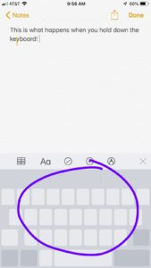
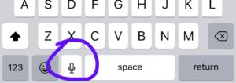

This article is all about saving time on your iPhone while typing. A really useful trick helps you edit blocks of text while you are typing. The main tip here is how to scroll through the text you are writing so you can edit and make changes where needed.
Many of us are used to double-tapping, holding down, and trying to move the cursor exactly where we need it. That never seemed to work well and can feel tricky on a small screen.
Use the keyboard as a trackpad
Once you are typing anywhere on your phone, including email, text, notes, a web browser, and more, you may notice a typo or a change you want to make. Hold down on the keyboard. Suddenly, all the letters disappear, and your keyboard becomes a giant mousepad. While you keep holding down, you can scroll through your block of text and place the cursor where you need it.
This is a simple way to edit different parts of a text block on your iPhone, and it is a fairly easy trick to learn.

More quick iPhone tips
Here are a few more quick tips and tricks you can use on iPhone and other iOS products.
Are you trying to save some space on your iPhone by deleting pictures? Save time by tapping Select, then dragging your finger over multiple rows of photos instead of deleting each one.
Explore Apple’s vast collection of emojis to add some emotion and fun into your texts.
Don’t feel like typing a text out? Next to the space bar is a microphone icon. Tap there to dictate your text messages, saving you time and effort.
